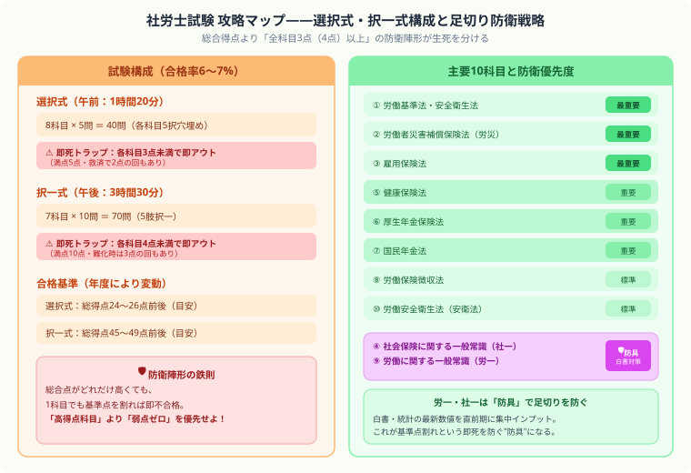

社労士の勉強時間・独学合格スケジュール【2026年版】
こんにちは、大谷です！
社労士試験と聞いて、僕が真っ先に震え上がったのは「合格率6〜7%」という数字より、実は「足切り」という地獄システムでした。総合得点でどれだけ稼いでも、たった1科目の得点が基準点を1点でも割った瞬間に、それまでの努力が全部water（水の泡）になる……。会計士試験で日々「一つのミスが命取り」な計算問題と格闘している僕からすると、これはもう即死トラップが10個以上仕掛けられたダンジョンにしか見えませんでした（笑）。
でも裏を返せば、社労士試験は「総合力で殴り勝つゲーム」ではなく「弱点を作らない防衛ゲーム」です。攻略法さえ分かれば、独学でも十分に踏破できます。今回は、会計士受験で培った"リスク管理思考"を武器に、足切りという即死トラップを回避しながらレベルアップしていく攻略ルートを、僕なりに徹底解説します！
また、モチベ維持のために、記事の末尾のほうにある【いいねボタン】もポチッと押してもらえると、めちゃくちゃ嬉しいです！
社会保険労務士（社労士）は人事・労務のスペシャリスト資格で、毎年約5万人が受験します。合格率は6〜7%と難関ですが、独学合格者も一定数います。必要勉強時間は多いものの、正しいスケジュールで着実に進めれば合格できます。
社労士試験の基本情報

社労士試験は選択式・択一式の2段構成で、総得点だけでなく各科目ごとの足切りラインをクリアしなければ不合格になります。10科目を満遍なく学びながら足切りリスクを管理する戦略が不可欠です。
| 項目 | 内容 |
|---|---|
| 試験日 | 毎年8月第4日曜日（2026年は8月23日予定） |
| 合格率 | 6〜7% |
| 合格基準 | 選択式・択一式それぞれに基準点あり（足切りに注意） |
| 必要勉強時間 | 独学：800〜1,000時間 |
| 試験科目 | 労働基準法・安衛法・労災・雇用保険・健康保険・厚生年金・国民年金・社一・労一 |
選択式・択一式ともに各科目に最低点が設定されています。全体の点数が高くても1科目でも基準を下回ると不合格になります。苦手科目をなくすことが合格の絶対条件です。
科目別の勉強時間配分
| 科目 | 目安勉強時間 | 特徴 |
|---|---|---|
| 労働基準法 | 80〜100時間 | 基礎。しっかり固める |
| 雇用保険法 | 60〜80時間 | 数字の暗記が多い |
| 健康保険法 | 80〜100時間 | 改正が多い。最新版で学習 |
| 厚生年金・国民年金 | 150〜200時間 | 最難関。早めに着手 |
| 労災・安衛・徴収 | 100〜120時間 | 計算問題あり |
| 社一・労一 | 60〜80時間 | 白書・統計対策が必要 |
独学スケジュール（8ヶ月プラン）
| 時期 | 学習内容 | 1日の目安 |
|---|---|---|
| 1〜2ヶ月目 | 労働基準法・安衛法・労災精読 | 2時間 |
| 3ヶ月目 | 雇用保険・徴収法精読 | 2時間 |
| 4〜5ヶ月目 | 健康保険・厚生年金・国民年金精読 | 2〜3時間 |
| 6ヶ月目 | 社一・労一・全科目問題集演習 | 2〜3時間 |
| 7ヶ月目 | 過去問演習・弱点科目補強 | 3時間 |
| 8ヶ月目 | 直前対策・模擬試験・白書対策 | 3〜4時間 |
足切り突破のための科目別「最低点確保」戦略
社労士試験は選択式・択一式それぞれで科目ごとに最低点が設定されています。2026年度の基準点の目安は以下のとおりです（年度により変動）。
| 試験形式 | 通常の基準点 | 難化した場合の特例救済 |
|---|---|---|
| 選択式（各5問） | 各科目3点以上 | 救済措置で2点に引き下がる回あり |
| 択一式（各10問） | 各科目4点以上 | 難化時に3点に引き下がる回あり |
社労士試験の頻出改正法令（2026年版）
| 科目 | 注目の改正・ポイント |
|---|---|
| 労働基準法 | 時間外労働の上限規制の定着・育児休業取得促進に関する動向 |
| 雇用保険法 | 育児休業給付の給付率・受給要件の変更を要確認 |
| 健康保険法 | 保険料率・被扶養者の認定基準の年次改定 |
| 厚生年金・国民年金 | 年金額の改定率・在職老齢年金の支給停止基準額 |
| 社一・労一 | 最新白書（厚生労働白書・労働経済白書）の統計数値 |
社労士試験は「その年に施行された法改正」が高確率で出題されます。受験年度の改正情報は、TACや大原が発行する「法改正まとめテキスト」（直前期に市販・無料配布）で効率よく把握しましょう。
独学 vs 通信講座比較
| 独学 | 通信講座（クレアール・フォーサイト等） | 予備校（TAC・大原） | |
|---|---|---|---|
| 費用 | 5〜10万円 | 10〜25万円 | 25〜50万円 |
| 合格率 | 低い（情報収集が困難） | 標準〜高め | 高い |
| 向いている人 | 法律・社保の実務経験者・再受験者 | 社会人・時間が限られる人 | 初学者・確実に合格したい人 |
| 法改正情報 | 自力で収集が必要 | 毎年更新のテキストで対応 | 最新情報を講師が解説 |
合格後の登録・活用方法
| 活用パターン | 内容 | 年収目安 |
|---|---|---|
| 社労士事務所開業 | 中小企業の労務管理・社会保険手続き代行・給与計算 | 300〜1,000万円以上 |
| 企業内社労士 | 人事・総務部門で労務管理・就業規則整備・助成金申請 | +50〜100万円（資格手当含む） |
| コンサルタント | 人事制度構築・働き方改革支援・ハラスメント対策 | 400〜800万円 |
合格後は社会保険労務士会への登録（開業登録 or 勤務登録）が必要です。登録費用として入会金+年会費が発生します（地域によって異なるが計10〜20万円程度）。
独学成功のポイント
年金科目は早めに着手する
厚生年金・国民年金は社労士試験最大の山場です。計算問題・制度理解・数字の暗記が組み合わさり、習得に時間がかかります。学習開始から半年以内に手をつけ始めることを推奨します。
白書・統計対策は直前期に集中する
社一・労一の白書・統計問題は毎年最新データが出ます。7〜8月に集中的に最新の白書サマリーを確認するのが効率的です。
改正情報を毎年確認する
社労士試験は法改正が頻繁に出題されます。テキストは必ず最新年度版を使用し、受験年度の改正ポイントをまとめた資料も活用しましょう。
⚔ 社労士の長期学習をゲームで管理しよう
スタディクエストなら800〜1,000時間の勉強も経験値として積み上げられます。
8ヶ月の長期戦を仲間と一緒に乗り越えましょう。完全無料。
まとめ
- 社労士の独学に必要な勉強時間は800〜1,000時間
- 足切り制度があるため苦手科目をなくすことが必須
- 年金科目（厚生年金・国民年金）は最難関。早めに着手
- 白書・統計は直前期に最新版を確認
- テキストは必ず受験年度の最新版を使用する
社会保障の知識は、一生使える"自分と家族を守る防具"です
年金・雇用保険・健康保険……最初は数字だらけで嫌になりますが、知れば知るほど「自分の生活を守るための制度」だと実感できて面白くなってきます。10科目すべてに防衛ラインを張り切った瞬間の達成感は格別です。僕の執筆のモチベーション維持のために、この下にある【いいねボタン】をポチッと押してもらえると、めちゃくちゃ嬉しいです！ そして、Study Questで毎日の学習時間を記録しながら、800〜1,000時間の長期クエストを一緒に攻略していきましょう。